Crear contenidos educativos
Crear materiales propios es una de las tareas más habituales del profesorado, y casi siempre supone reunir texto, imágenes, sonido y vídeo en un mismo recurso. En esta página se recogen programas libres para cada una de esas tareas, desde las herramientas de autor hasta la maquetación de un libro.
Las suites ofimáticas y las plataformas del centro se tratan en «Suites y plataformas», las herramientas de trabajo simultáneo en «Colaboración y gestión del aula» y las aplicaciones que el propio profesorado puede crear con ayuda de la inteligencia artificial, en «Crear aplicaciones propias con IA».
![Infografía «Herramientas libres para crear materiales», con nueve grupos. Herramientas de autor: eXeLearning, H5P y JClic. Fichas interactivas: OpenWorksheets. Documentos PDF: Xournal++ y PDF Arranger. Imagen y tres dimensiones: GIMP, Inkscape, Krita y Blender. Vídeo: Kdenlive, Shotcut, OpenShot y Avidemux. Grabación de pantalla: OBS Studio, VokoscreenNG y SimpleScreenRecorder. Audio: Audacity y Tenacity. Organizadores gráficos: Freeplane, Framindmap, Markmap, Sirena y draw.io. Publicaciones: EdiMarkdown, Sigil, Calibre y Scribus](../content/resources/infografia-creacion-contenidos.jpg "Herramientas libres para crear materiales")
Herramientas de autor para docentes
Se llama herramientas de autor a los programas pensados para crear materiales didácticos completos, con actividades incluidas, sin necesidad de programar. Todas las que siguen producen materiales que funcionan en cualquier navegador, y las dos primeras son las más extendidas en los centros.
eXeLearning
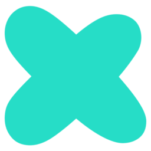
eXeLearning permite crear recursos que integran texto, vídeo, imágenes, cuestionarios, actividades interactivas y archivos adjuntos. Todo se monta con bloques llamados iDevices, cada uno con una función distinta, y el resultado se exporta como página web, libro electrónico ePub, documento PDF o paquete para un aula virtual como Moodle.
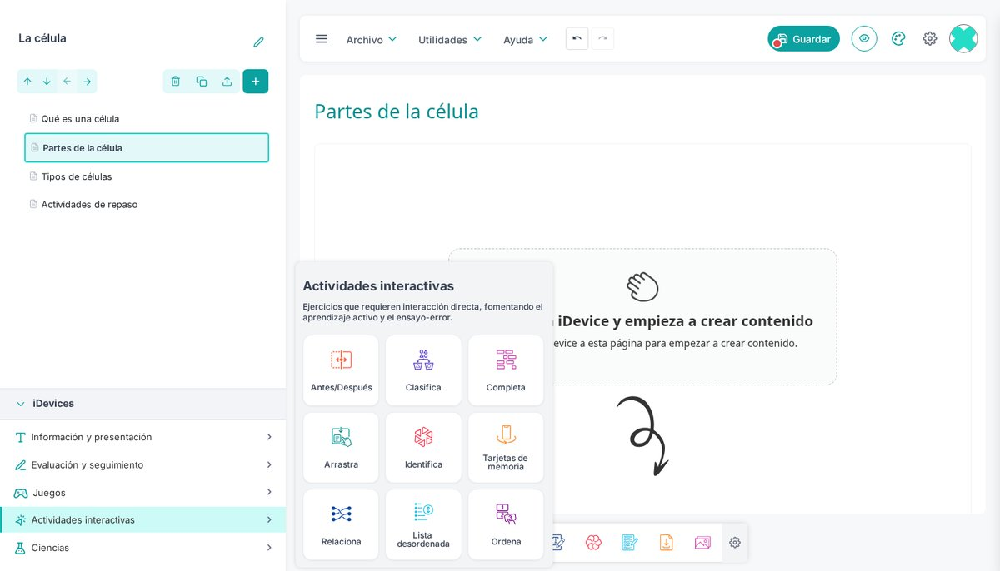
El programa se instala en GNU/Linux, Windows y Mac, y también puede usarse en línea, sin instalar nada. Los materiales creados se pueden consultar en el ordenador, en una memoria USB o publicados en Internet.
Para saber más:
- Ayuda y manual de eXeLearning, con la documentación oficial del proyecto.
- Grupo de Telegram de eXeLearning, donde se resuelven dudas y se comparten materiales.
H5P
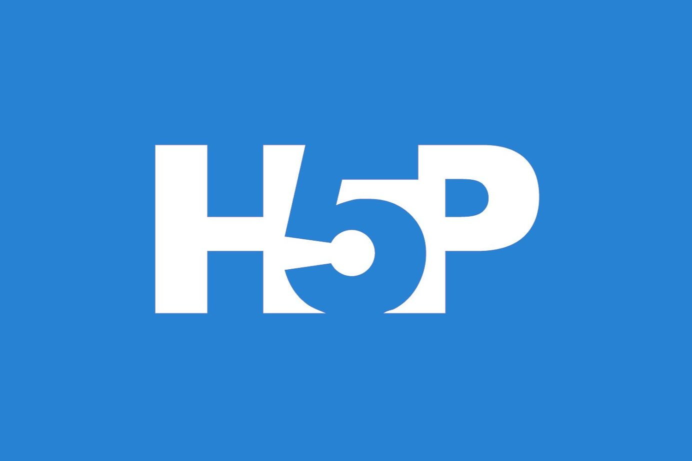
H5P sirve para crear actividades interactivas —preguntas sobre un vídeo, líneas de tiempo, presentaciones con ejercicios, imágenes con puntos activos— que se insertan dentro de otra plataforma, como Moodle o WordPress. El programa es libre, con licencia MIT, y se instala en el servidor del centro; la empresa que lo desarrolla ofrece además un servicio de alojamiento de pago. En la web del proyecto se pueden probar algunos tipos de actividad, pero solo una parte del catálogo, de modo que para trabajar con todos hace falta una instalación propia.
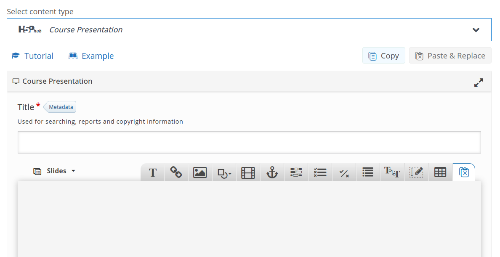
Lumi es un programa libre de escritorio que crea y edita actividades H5P sin necesidad de servidor. Funciona en GNU/Linux, Windows y Mac, y guarda el resultado como archivo H5P, como página web autónoma o como paquete SCORM, de manera que el material se prepara en el propio ordenador y se sube después al aula virtual.

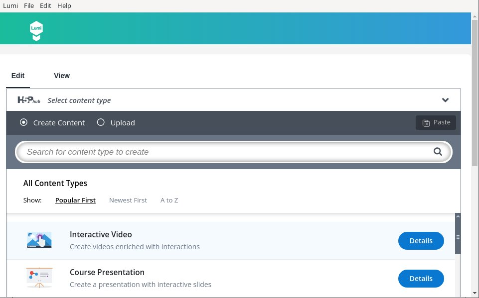
Los contenidos hechos con H5P se pueden descargar y reutilizar en otra instalación, de modo que el material no queda atrapado en la plataforma donde se creó.
JClic
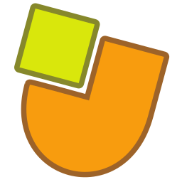
JClic es un conjunto de programas libres, con licencia GPL, para crear actividades educativas: puzles, asociaciones, sopas de letras, crucigramas, juegos de memoria y ejercicios de texto. Lo mantiene el Departamento de Educación de la Generalitat de Cataluña, y las actividades se agrupan en proyectos que el alumnado recorre una tras otra.El editor, JClic Author, necesita Java y se instala en GNU/Linux, Windows y Mac. Las actividades se abren en cualquier navegador, también en tabletas y móviles, y se pueden publicar en una web o en el aula virtual.

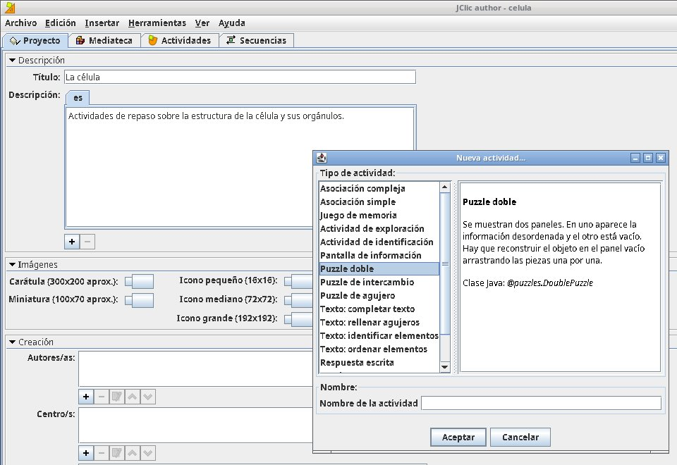
Para saber más:
- Biblioteca de actividades de JClic, con proyectos compartidos por docentes de distintos países. Cada uno indica su licencia de uso.
Fichas interactivas
Una ficha interactiva parte de un documento ya hecho, en PDF o en imagen, y le añade encima campos de respuesta que se corrigen solos. Es una forma rápida de aprovechar las fichas que el profesorado ya tiene preparadas. El servicio más conocido de este tipo es Liveworksheets, que no es software libre.
OpenWorksheets
OpenWorksheets convierte un PDF o una imagen en una ficha que se corrige sola. Sobre el documento se colocan campos de respuesta de muchos tipos: respuesta corta o numérica, huecos, opciones, verdadero o falso, tablas, relacionar con flechas, arrastrar a zonas, fórmulas matemáticas y químicas o grabaciones de voz. También se puede empezar desde una hoja en blanco o preparar la ficha con cualquier asistente de IA, copiando y pegando las instrucciones que genera el propio programa.

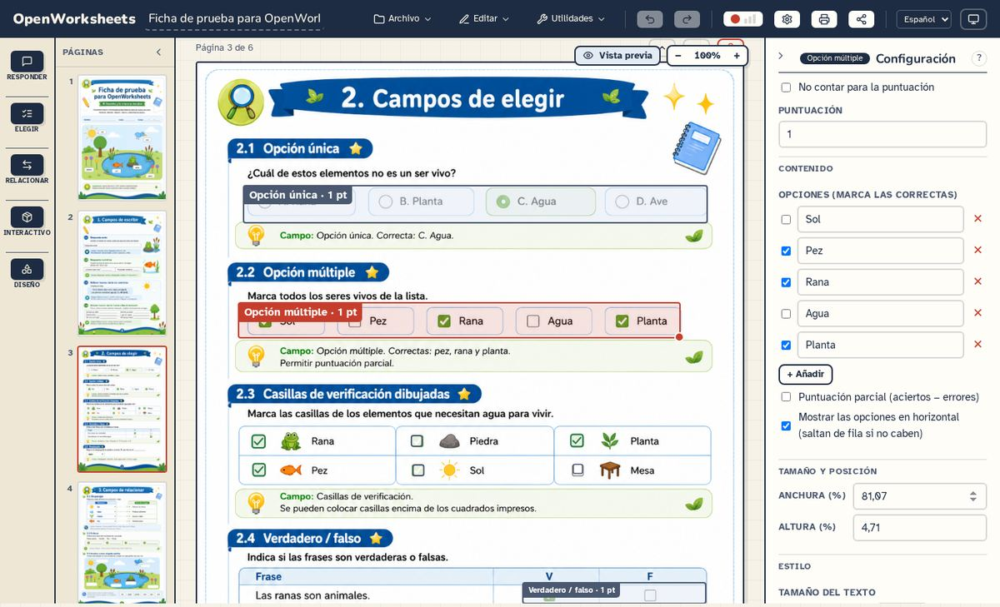
Funciona en el navegador sin servidor, sin cuentas y sin instalar nada. El alumnado entrega sus respuestas en un archivo o con un enlace, y el docente abre las de toda la clase en una tabla que se puede exportar a una hoja de cálculo. La ficha admite contraseña, fechas de apertura y cierre, tiempo límite y número de intentos, y se puede exportar como página web o como paquete SCORM para el aula virtual. La interfaz está en castellano, catalán, gallego, euskera e inglés, y el código tiene licencia AGPL 3.
Documentos PDF
Buena parte del material que circula en los centros son documentos PDF: fichas, exámenes, circulares o apuntes. Estos programas permiten escribir encima de ellos y reorganizar sus páginas sin subirlos a un servicio en línea.
Xournal++
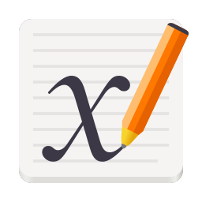
Xournal++ sirve para escribir sobre un PDF: añadir texto, subrayar, marcar a mano con el ratón o con un lápiz digital, o insertar imágenes. Es útil para rellenar una ficha, corregir un trabajo entregado en PDF o preparar anotaciones para proyectar en clase. Al exportar, el PDF conserva todo lo añadido.Funciona en GNU/Linux, Windows y Mac, con la interfaz en castellano, y tiene licencia GPL. Con una tableta gráfica o una pantalla táctil hace también de pizarra.

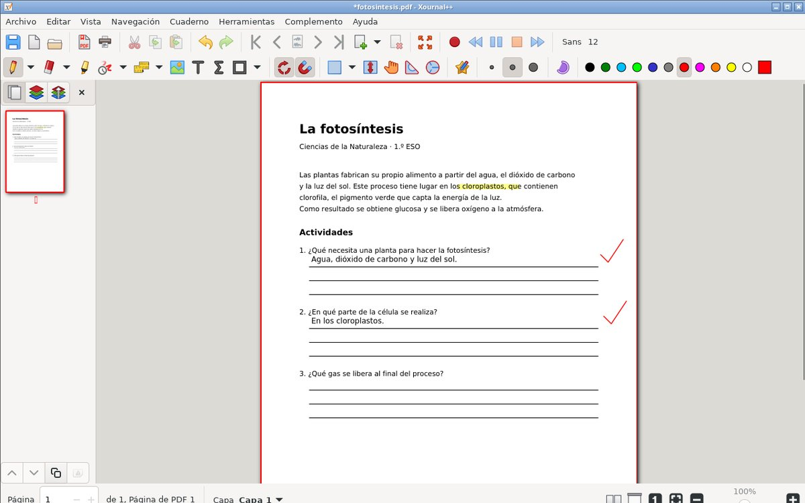
PDF Arranger
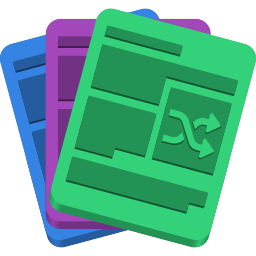
PDF Arranger une varios PDF en uno, separa o quita páginas, las reordena arrastrándolas y las gira. Hace lo mismo que servicios en línea como iLovePDF, con la ventaja de que los documentos no salen del ordenador, algo importante cuando contienen datos del alumnado.Funciona en GNU/Linux y Windows, con la interfaz en castellano, y tiene licencia GPL.

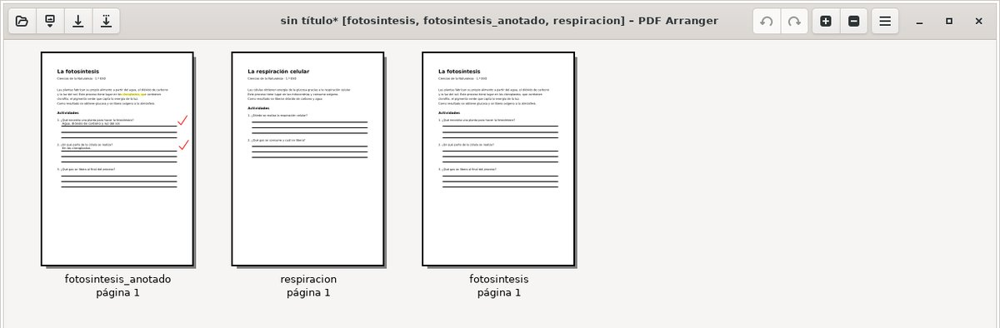
Imagen y diseño en tres dimensiones
Los programas libres de imagen cubren todo el recorrido: retocar una fotografía, dibujar con vectores, pintar a mano alzada y modelar en tres dimensiones.
GIMP
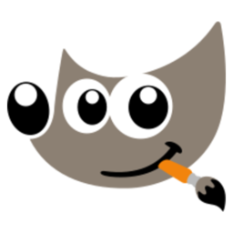
GIMP es el programa de referencia para retocar fotografías y componer imágenes. Trabaja con capas, máscaras y filtros, abre los formatos habituales y funciona en GNU/Linux, Windows y Mac. La versión 3, publicada en 2025, incorporó la edición no destructiva, que permite deshacer un ajuste mucho después de haberlo aplicado.
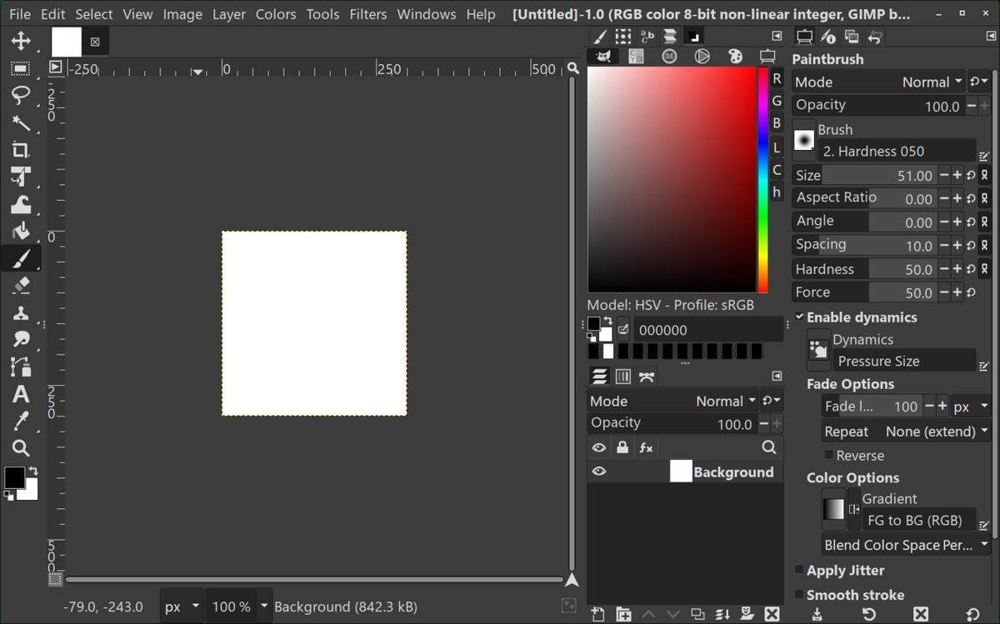
Para saber más: Curso de GIMP para novatos.
Inkscape
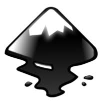
Inkscape es un editor de gráficos vectoriales, es decir, dibujos formados por figuras que se pueden ampliar sin perder calidad. Es la alternativa libre a programas como Illustrator o CorelDRAW, y usa como formato propio el SVG, un estándar del W3C que abren todos los navegadores. Resulta útil para carteles, esquemas, mapas y material impreso.
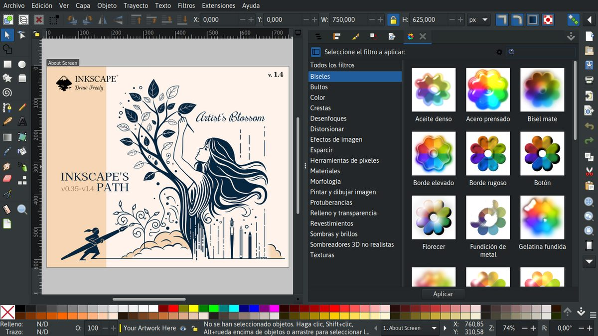
Para saber más: Inkscape en 15 minutos.
Krita
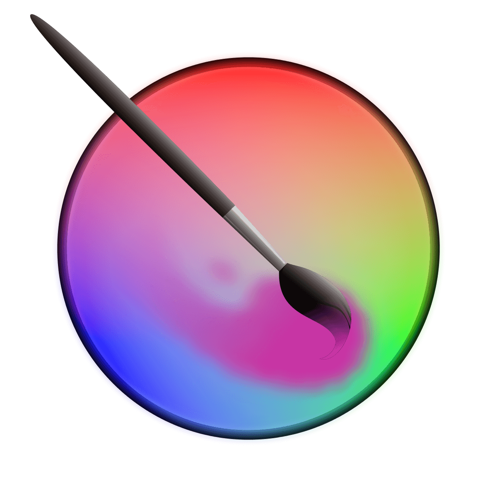
Krita está pensado para dibujar y pintar, más que para retocar fotografías. Trae cientos de pinceles, admite tabletas gráficas con sensibilidad a la presión e incluye herramientas de animación cuadro a cuadro, lo que lo hace muy adecuado para las materias artísticas.
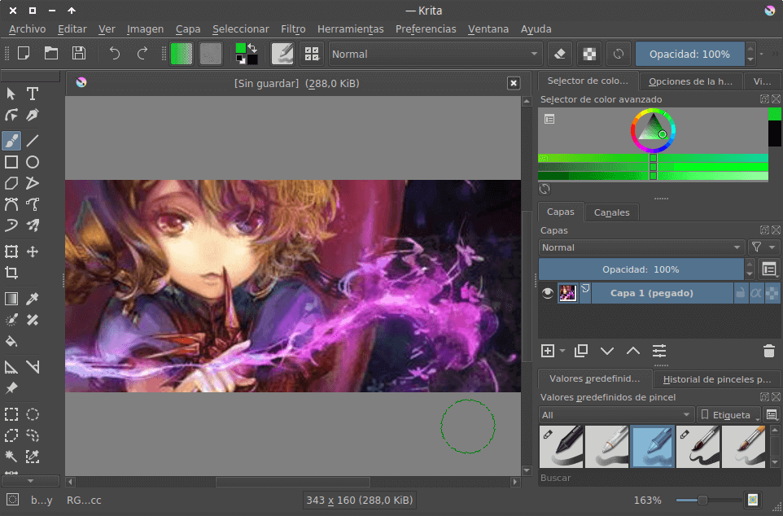
Para saber más: Cómo animar en Krita.
Blender
Blender es el programa libre de modelado, animación y renderizado en tres dimensiones, usado también fuera de la escuela en cine y videojuegos. En clase sirve para dibujo técnico, diseño de piezas que luego se imprimen en tres dimensiones y proyectos audiovisuales, ya que incluye además un editor de vídeo. Su aprendizaje es largo, así que conviene plantearlo como proyecto de varias sesiones.

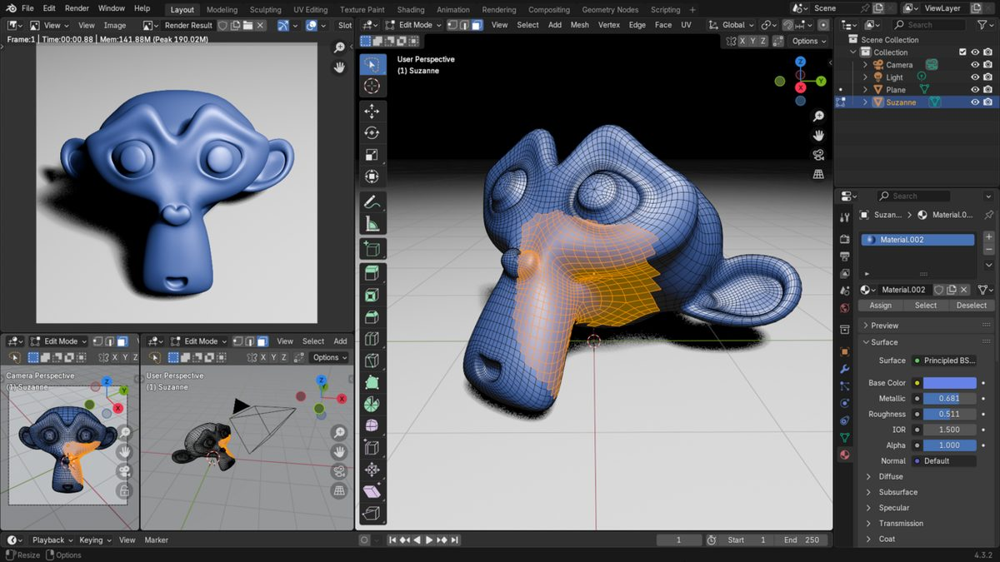
Edición de vídeo
Editar vídeo consiste en cortar, unir y ajustar fragmentos hasta obtener el resultado buscado. Es habitual al preparar explicaciones grabadas y al trabajar con las grabaciones que hace el alumnado.
Kdenlive
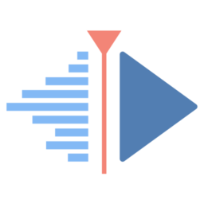
Kdenlive es un editor multipista que permite montar imagen y sonido en varias capas, con efectos, transiciones y títulos. Lo mantiene la comunidad de KDE, funciona en GNU/Linux, Windows y Mac, y está traducido al español.Genera también subtítulos a partir del audio, sin conexión a Internet, con el reconocimiento de voz de Whisper o de VOSK, como explica su documentación. En la mediateca de EducaMadrid hay un vídeo que muestra cómo hacerlo.

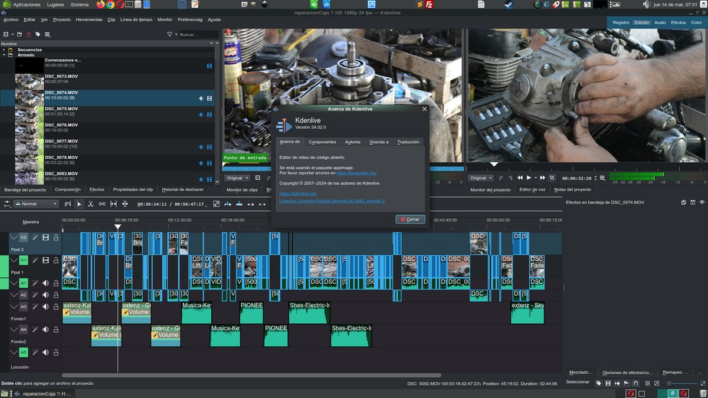
Para saber más: Tutorial de Kdenlive en español.
Shotcut
Shotcut admite una cantidad enorme de formatos sin necesidad de convertir los archivos, y ofrece un montaje avanzado con filtros de imagen y sonido. Funciona en los tres sistemas operativos y también permite grabar la pantalla.

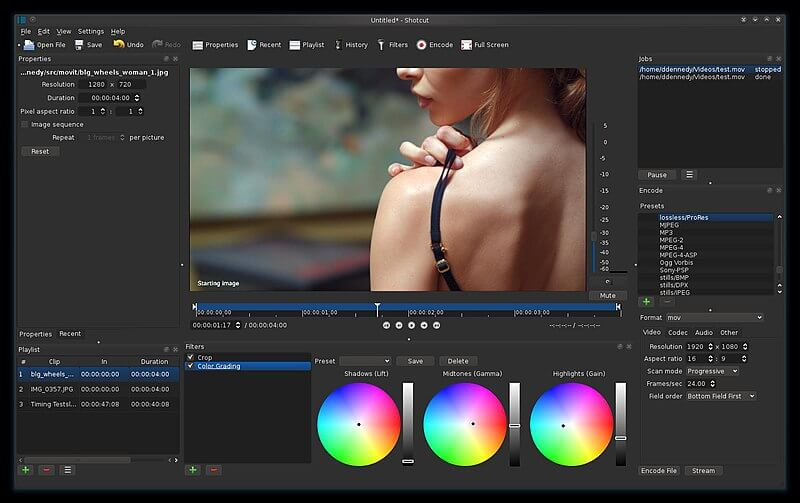
Para saber más: Shotcut, editor de vídeo en español.
OpenShot
OpenShot es el más sencillo de los tres y el más adecuado para empezar: se arrastran los vídeos a la línea de tiempo, se cortan y se añaden títulos y transiciones con pocos pasos. Tiene versión en español para GNU/Linux, Windows y Mac.

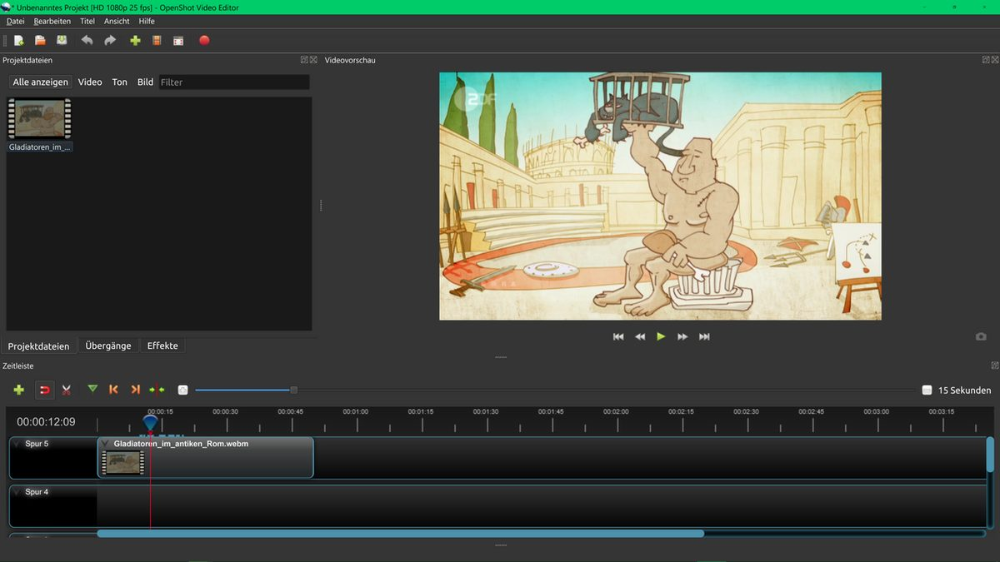
Para saber más: Tutorial de OpenShot en español.
Avidemux
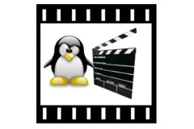
Avidemux no es un editor completo, sino una herramienta para operaciones rápidas: cortar un fragmento, cambiar el formato de un archivo o separar el sonido de la imagen para tratarlo aparte. Para esas tareas resulta mucho más directo que un editor multipista.
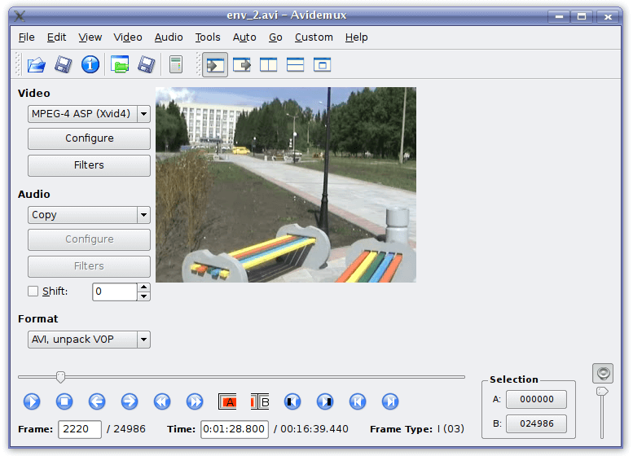
Para saber más: Edición con Avidemux.
Grabación de pantalla
Grabar lo que ocurre en la pantalla, con la voz de quien explica, permite preparar tutoriales y explicaciones que el alumnado puede ver cuando le convenga. Es lo que se conoce como screencast.
OBS Studio
OBS Studio graba la pantalla, la cámara y el sonido, y permite combinar varias fuentes en escenas que se cambian con un clic, como en un plató. Además de grabar, emite en directo. Es el más potente de los tres y el que más opciones ofrece, a cambio de una configuración inicial algo más larga.

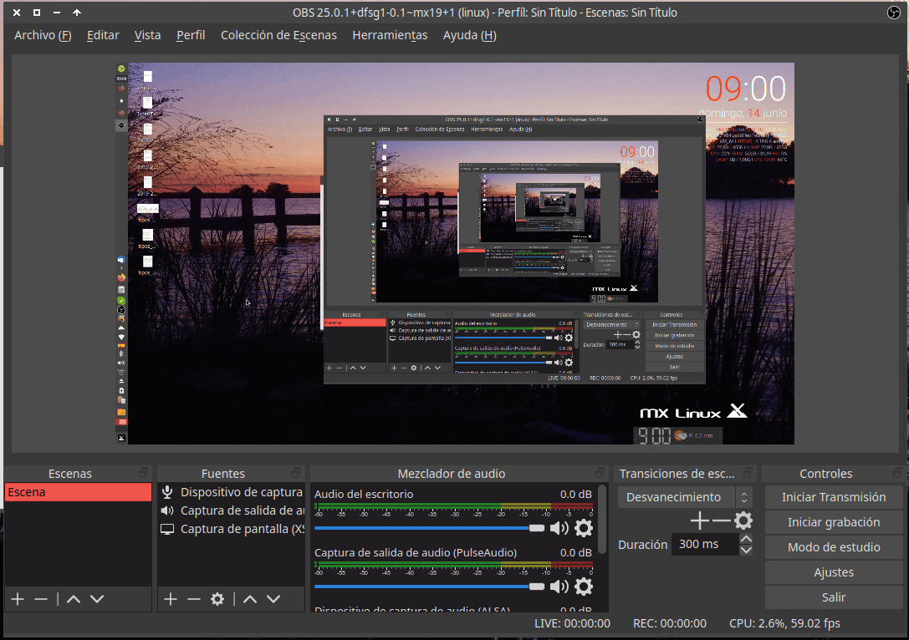
Para saber más: Cómo grabar clases y tutoriales con OBS Studio.
VokoscreenNG
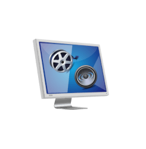
VokoscreenNG hace lo esencial y poco más: elegir una zona de la pantalla, grabarla con el audio y guardar el archivo. Esa sencillez lo hace cómodo cuando solo se quiere registrar una explicación. Funciona en GNU/Linux y Windows.
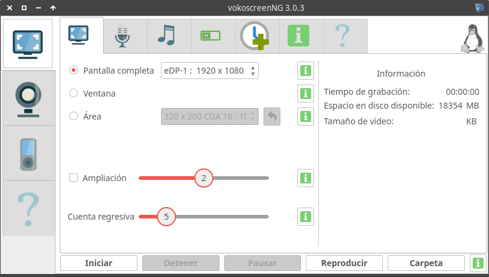
Para saber más: Prepara tus clases con OBS y Vokoscreen.
SimpleScreenRecorder
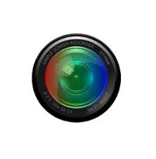
SimpleScreenRecorder existe solo para GNU/Linux y consume muy pocos recursos, lo que resulta útil en equipos antiguos. Graba la pantalla completa o una parte, con el sonido del sistema o del micrófono.
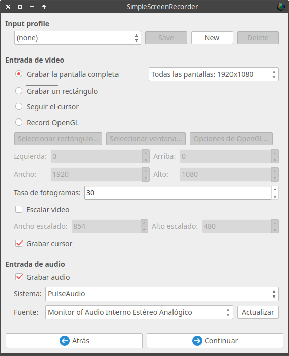
Para saber más: Tutorial de SimpleScreenRecorder.
Audio
El audio se aprovecha menos que el vídeo en clase, aunque un pódcast o una grabación comentada exigen menos medios y permiten trabajar la expresión oral con mucha claridad.
Audacity
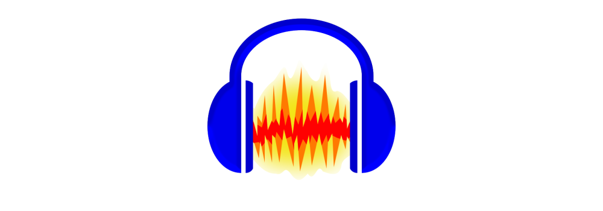
Audacity es el editor de sonido más conocido y lleva más de veinte años en uso. Graba, monta varias pistas, limpia el ruido de fondo y aplica todo tipo de efectos, en GNU/Linux, Windows y Mac. Desde 2021 pertenece a la empresa Muse Group, que mantiene el programa libre y ha añadido servicios opcionales de cuenta y almacenamiento en línea, que no hace falta usar.
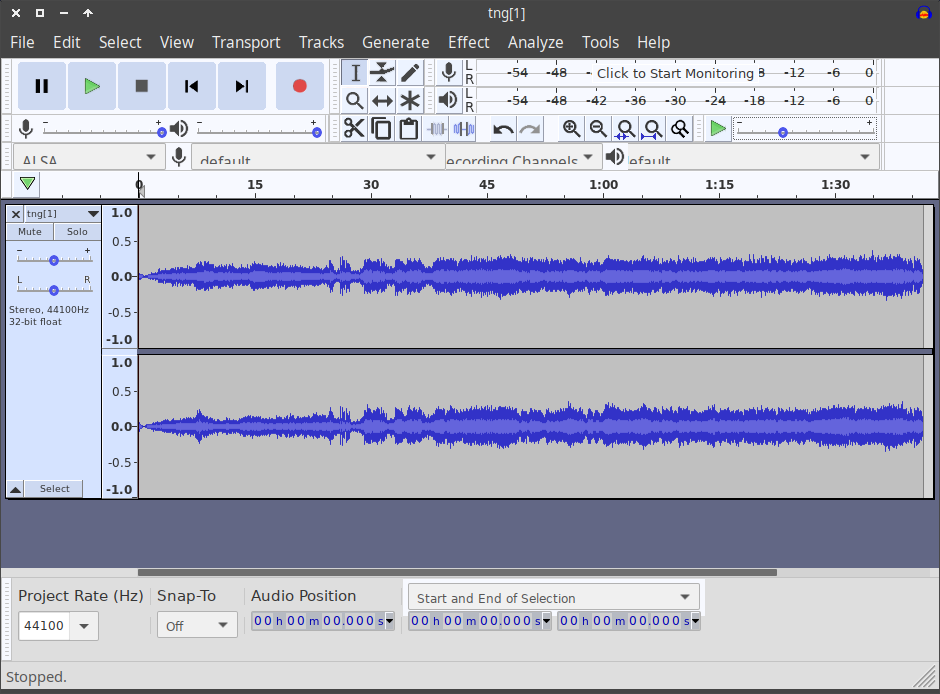
Tenacity
Tenacity nació en 2021 como bifurcación de Audacity, cuando el cambio de propietario y la recogida de datos que se propuso entonces generaron desconfianza. Lo mantiene una comunidad de voluntarios, funciona igual y no incluye ningún servicio en línea, así que es la opción para quien prefiera un programa sostenido por la comunidad.

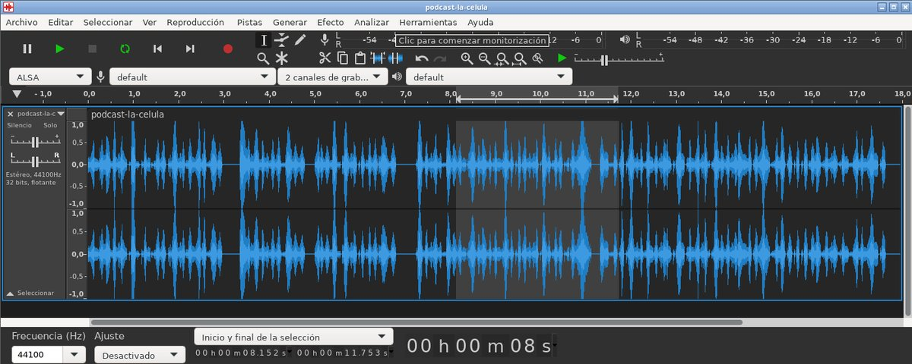
Organizadores gráficos
Los organizadores gráficos ayudan a ordenar las ideas de forma visual. En un mapa mental las ideas salen de un concepto central en forma de ramas; en un mapa conceptual, los conceptos se unen entre sí con palabras que explican la relación, de manera que cada enlace se lee como una frase.
Freeplane
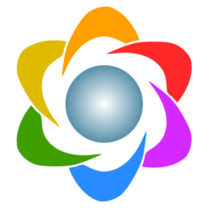
Freeplane es un programa de escritorio para mapas mentales y conceptuales, continuación de Freemind, cuyos archivos abre sin problema. Permite añadir notas, iconos, enlaces y atributos a cada nodo, calcular con ellos y exportar el mapa como imagen, página web o documento. Funciona en GNU/Linux, Windows y Mac, con la interfaz traducida al español.
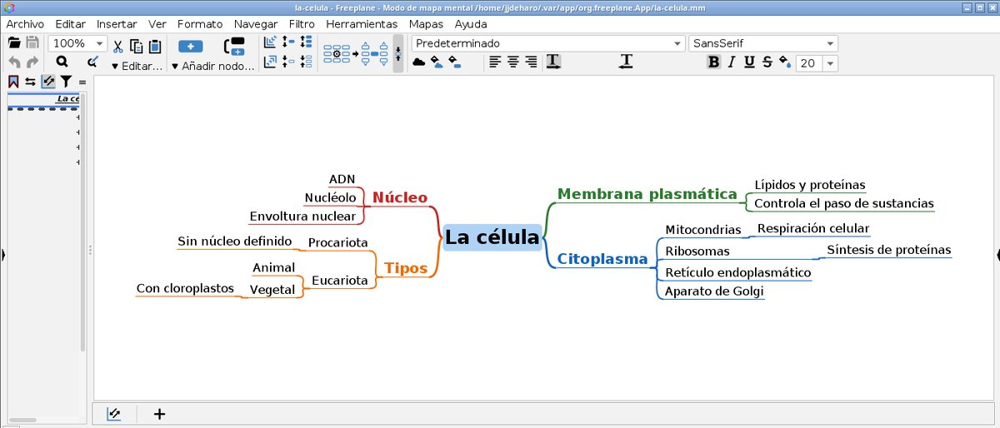
Framindmap
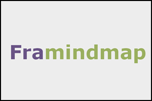
Framindmap es un servicio en línea de Framasoft para crear mapas mentales desde el navegador, sin instalar nada. Por debajo funciona con WiseMapping, que es software libre, de modo que un centro puede instalarlo en su propio servidor si quiere guardar ahí los mapas del alumnado.
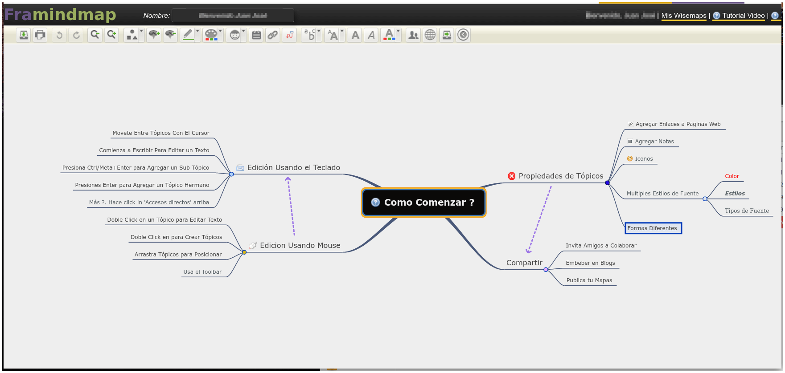
Para saber más: vídeo de tres minutos, en francés, sobre su funcionamiento.
Markmap
Markmap convierte un esquema escrito en Markdown en un mapa mental que se pliega y se despliega con el ratón. El guion se escribe como una lista de títulos y apartados, y el mapa se dibuja solo.
Funciona en el navegador sin necesidad de cuenta, y el mapa se descarga como imagen SVG o como página web que conserva las ramas plegables. Esa página se puede subir al aula virtual, donde el alumnado recorre el mapa sin instalar nada.

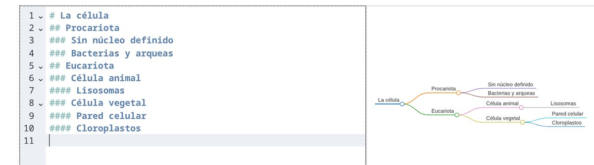
Como se parte de texto, el esquema de una unidad se escribe en cualquier editor o se le pide a un asistente de inteligencia artificial, y el mapa sale de ahí sin más trabajo. La interfaz está en inglés, aunque se reduce a unos pocos botones.
Sirena
Sirena dibuja en el navegador los diagramas escritos con Mermaid. El diagrama se escribe como texto en la mitad izquierda y aparece dibujado en la derecha, sin cuenta y sin límite de uso.
Mermaid es el lenguaje con el que se describen estos diagramas. Unas pocas líneas bastan para un diagrama de flujo, un mapa conceptual, una línea del tiempo, un mapa mental o un cronograma, y el programa trae ejemplos pensados para el aula de los que se puede partir.
Para dar forma al diagrama no hace falta conocer la sintaxis. Una barra sobre el texto cambia la orientación, los colores, el tipo de letra, la forma de las cajas o el estilo de las flechas. En los diagramas de flujo se trabaja además sobre el propio dibujo: el doble clic edita un texto, el botón derecho abre el formato de una caja o de una flecha y las flechas nuevas se trazan arrastrando. Cada ajuste queda escrito en el código, de modo que el diagrama se ve igual en cualquier editor de Mermaid.

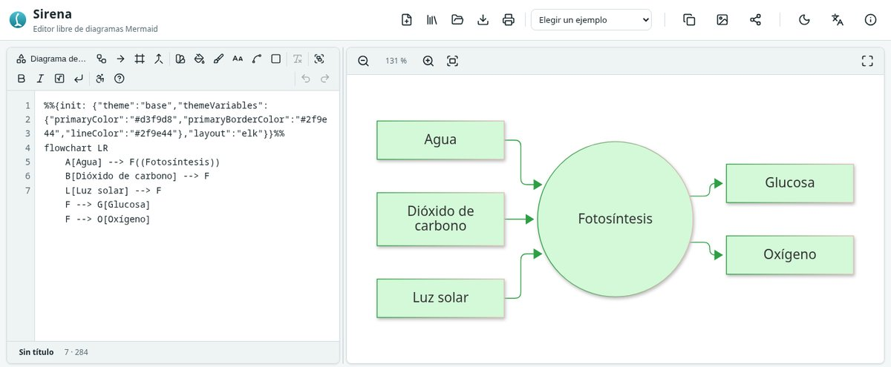
El resultado se descarga como imagen PNG o SVG, como página web que funciona sin conexión o como archivo de texto para seguir editándolo, y también se puede imprimir o guardar en PDF. Los diagramas se guardan con nombre en el propio navegador y se comparten con un enlace que lleva el diagrama dentro de la dirección, así que nada se sube a ningún servidor. Con ese mismo enlace se incrusta en un blog o en un material de eXeLearning.
Cada diagrama admite un título y una descripción que leen los lectores de pantalla, y admite también fórmulas matemáticas. Una ventana de ayuda muestra la sintaxis del tipo de diagrama que se está escribiendo. La interfaz está en castellano, catalán, gallego, euskera e inglés, funciona en móvil y en tableta y sigue el tema claro u oscuro del dispositivo. El código tiene licencia AGPL 3.
draw.io
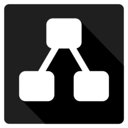
draw.io sirve para diagramas de todo tipo, incluidos los mapas conceptuales con sus enlaces etiquetados, y también organigramas, diagramas de flujo y esquemas de red. Funciona en el navegador sin registro, guarda el archivo donde se le indique y tiene versión de escritorio. A diferencia de las pizarras de dibujo libre que se tratan en «Colaboración y gestión del aula», aquí las figuras se conectan entre sí y se pueden mover sin romper el esquema.
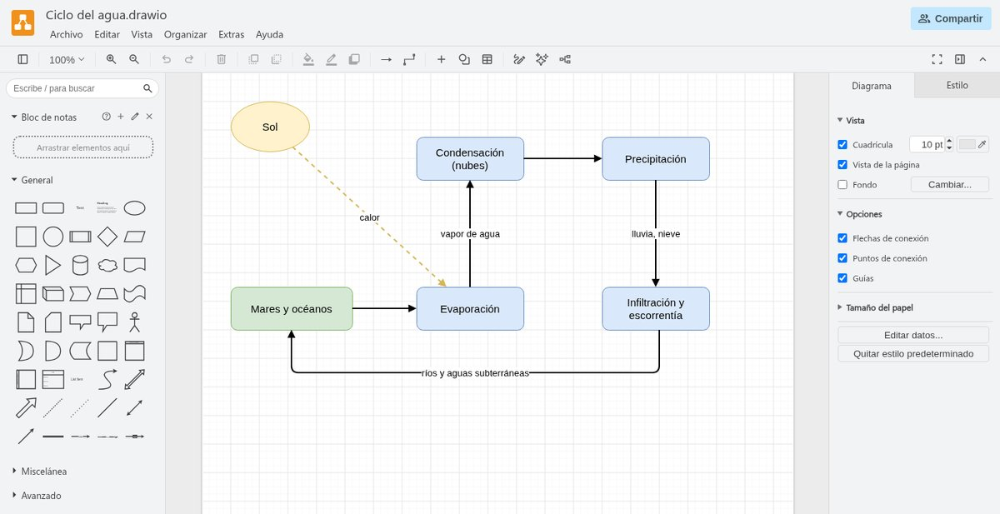
Publicaciones
El primero sirve para escribir documentos y exportarlos a distintos formatos, los dos siguientes para preparar libros electrónicos y el último, para maquetar cualquier publicación destinada a imprimirse.
EdiMarkdown
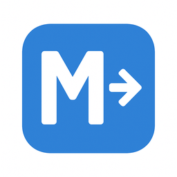
EdiMarkdown es un editor de textos pensado para docentes y estudiantes. El documento se escribe en Markdown, un formato de texto con marcas sencillas para los títulos, las negritas o las listas, y a su lado aparece ya compuesto. También se puede escribir directamente sobre el resultado, como en un procesador de textos.Resulta especialmente útil en los materiales de ciencias y en los trabajos académicos. Admite fórmulas matemáticas, con un editor visual que evita escribirlas a mano, y cita las fuentes con estilos como APA, de modo que la bibliografía se compone sola al final del documento.

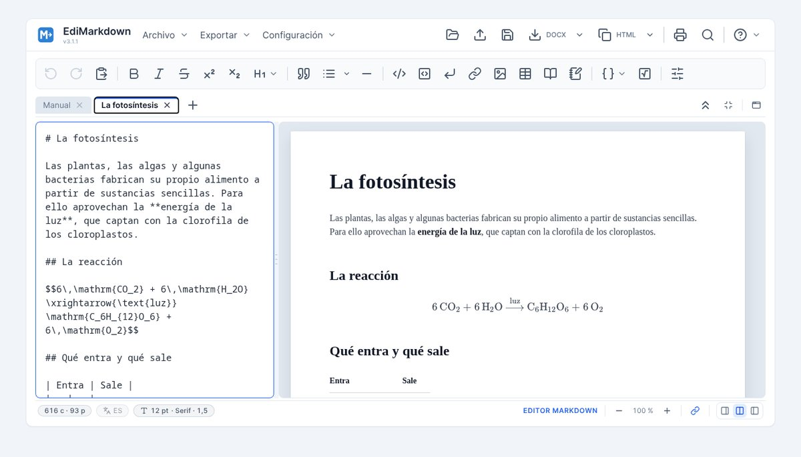
Importa documentos de Word, LibreOffice, EPUB o PDF y exporta a esos mismos formatos, a página web o a LaTeX, así que sirve también para pasar un material de un formato a otro. Funciona en el navegador sin instalar nada y como programa de escritorio para GNU/Linux, Windows y Mac, y en los dos casos los documentos se quedan en el propio equipo. La interfaz está en castellano, catalán, gallego, euskera e inglés, y el código tiene licencia AGPL 3.
Sigil
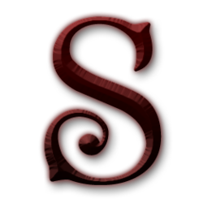
Sigil es un editor de libros en formato ePub que funciona como un procesador de textos, sin necesidad de conocer lenguajes de marcas. Da un control completo sobre la estructura y el aspecto del libro, y permite empezar desde cero o partir de un documento hecho con otro programa, como Writer de LibreOffice.
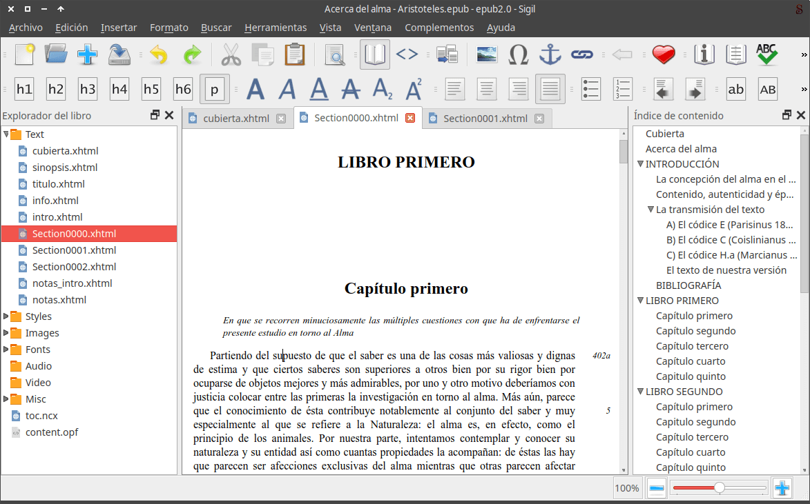
Para saber más: Cómo crear un ePub con Sigil paso a paso.
Calibre
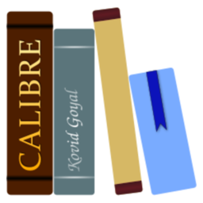
Calibre gestiona una biblioteca de libros electrónicos: los organiza, completa sus datos, convierte entre formatos como ePub, PDF o Mobi y los envía al lector de libros. Es el complemento natural de Sigil cuando hay que repartir un material en el formato que cada dispositivo admite.
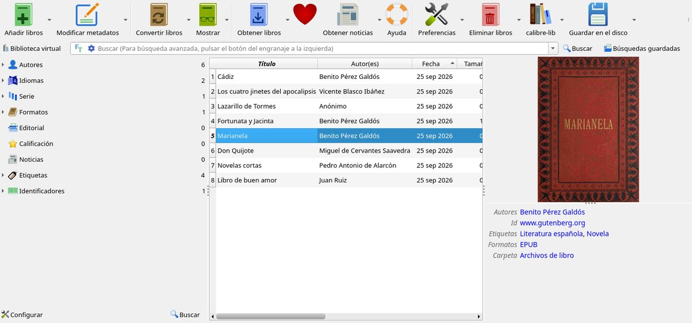
Scribus
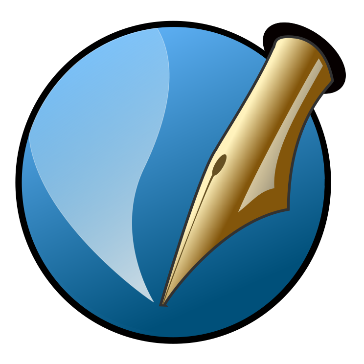
Scribus es un programa de maquetación profesional, comparable a InDesign, con el que se preparan revistas, carteles, trípticos y libros listos para imprenta. Controla con precisión la colocación del texto y las imágenes, y exporta a PDF con los perfiles de color que pide una imprenta.
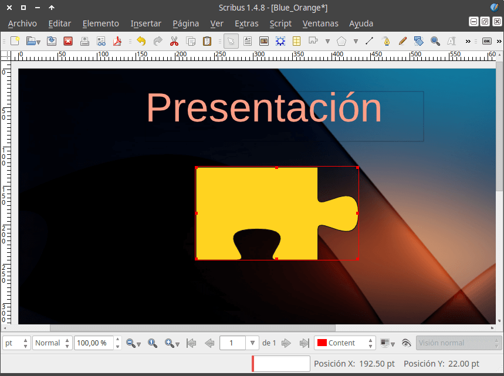
Para saber más: curso de Scribus en vídeo.